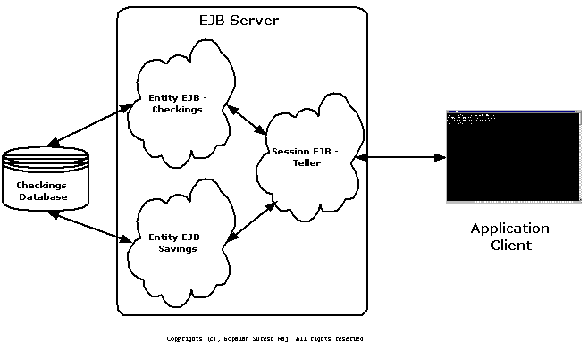

Developing
EJB Clients
Gopalan Suresh Raj
| Note |
| To
work with any of these samples, you will need the
following: .........................................JDK 1.1.6 or higher (I use JDK 1.1.7A) .........................................The EJBHome version0.5.1 - a free EJB Server from http://www.ejbhome.com To work with the EJB Servlet client, you will need .........................................JSDK 2.0 or higher |
1. Define your TellerClient class
Define a class called TellerClient which is a client to our Session Enterprise Bean "Teller". Realize that our Session Bean Teller is itself a client to our Entity Bean "Checkings". As discussed in Modelling using Session and Entity Beans, we use our Session beans as the only interface to the client.
A Three-Tier Architecture for a Typical Bank

Figure shows what we are
trying to ultimately accomplish in these pages here.
| Bank\TellerClient.java |
| package
Bank; import
java.rmi.*; public class
TellerClient public static
void main(String[] args) throws Exception TellerHome
home = (TellerHome)Naming.lookup("Teller"); |
2. Compile and run your client
| E:\MyProjects\AccountEJB\Bank>javac
TellerClient.java E:\MyProjects\AccountEJB>cd .. E:\MyProjects\AccountEJB>java
Bank.TellerTest |
click here to go to
My EJB HomePage...
| About the Author... |
| Gopalan Suresh Raj is a Software Architect, Developer and an active Author. He is contributing author to a couple of books "Enterprise Java Computing-Applications and Architecture" and "The Awesome Power of JavaBeans". His expertise spans enterprise component architectures and distributed object computing. Visit him at his Web Cornucopia© site (http://www.execpc.com/~gopalan) or mail him at gopalan@execpc.com. |
|
This site was developed and is maintained by Gopalan Suresh Raj This page has been visited |
|
Last Updated : Dec 19, '98 |
||
Copyright (c) 1997-98, Gopalan Suresh Raj - All rights reserved. Terms of use. |
All products and companies mentioned at this site are trademarks of their respective owners. |